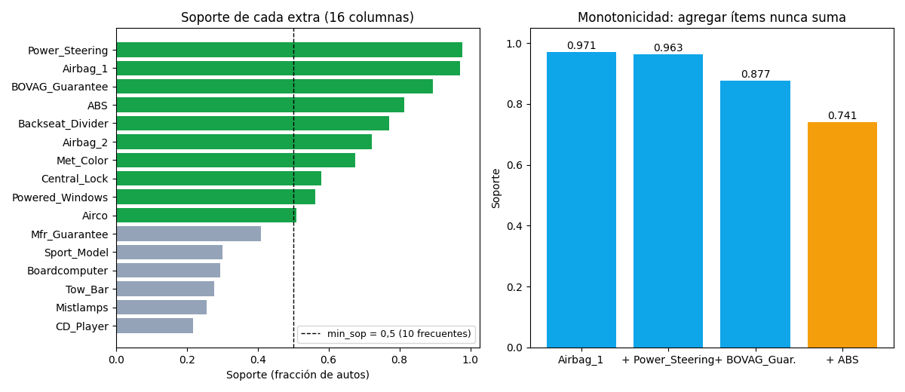

Bloque G · Frequent Itemsets · Lección 0039 · mar 17 nov
Soporte e itemsets: qué extras suelen venir juntos
Win de hoy: cada auto es un «changuito» de 16 extras (ABS, airbag, cierre…): el soporte mide cuán común es cada combo, y la monotonicidad (0,971 → 0,963 → 0,877 → 0,741) es el truco que hace posible el algoritmo Apriori.
1 · El auto como changuito
Olvidate del precio por un rato: cada fila es un conjunto de ítems sí/no —16 columnas de equipamiento—
como el ticket de un supermercado. Un
itemset
es cualquier combo («{ABS, cierre}»); su soporte es la fracción de autos que lo tienen completo.
Fijamos un umbral min_sop (ej. 0,5): lo que lo supera es
frecuente.
2 · Soportes: de lo obvio a lo raro

Dos lecturas: (1) lo casi-universal (dirección, airbag_1) domina todos los rankings pero no enseña nada: «los autos traen airbag» no es un hallazgo. Lo interesante vive en el medio (cierre 58 %, vidrios 56 %). (2) La cadena derecha cae siempre: quien tiene el combo de 4 (0,741) también tiene cada sub-combo — por eso el soporte del combo ≤ soporte de cada parte. Eso es monotonicidad, y es oro.
Regenerar la figura (mismo resultado versionado en assets/img/toyota/):
python scripts/make_figures.py --only soporte-itemsets3 · Por qué la monotonicidad importa (spoiler: poda)
Con 16 extras hay 2^16 − 1 = 65.535 combos posibles: contarlos todos es viable acá, imposible en un súper real (miles de productos). Monotonicidad al rescate: si {CD, llantas} ya es infrecuente, ningún super-combo suyo ({CD, llantas, techo}, …) puede ser frecuente. Se poda la rama entera sin contarla. Ese es todo el secreto de Apriori (lección 0041 (mié 18)).
4 · Soportes en 8 líneas (reproducí la Fig. 1)
import pandas as pd
E = ["ABS","Airbag_1","Airbag_2","Airco","Backseat_Divider",
"BOVAG_Guarantee","Boardcomputer","CD_Player","Central_Lock",
"Met_Color","Mfr_Guarantee","Mistlamps","Power_Steering",
"Powered_Windows","Sport_Model","Tow_Bar"]
B = pd.read_csv("../ToyotaCorolla.csv")[E]
print(B.mean().round(3).sort_values().to_string()) # soportes 1-ítem
cad = ["Airbag_1","Power_Steering","BOVAG_Guarantee","ABS"]
for k in range(1, 5):
print(k, round(B[cad[:k]].all(axis=1).mean(), 4)) # 0.9708 … 0.7409Tu turno: calculá el soporte de {Central_Lock, Powered_Windows}
(pista: 0,540 — el 54 % que ya vimos en la lección 0013 (Anexo))
y verificá que es ≤ cada soporte individual.
5 · Quiz (auto-chequeo inmediato)
6 · Fuente primaria y cierre
Para profundizar (1 fuente): Tan, Steinbach & Kumar, Introduction to Data Mining — cap. 6 (ítems frecuentes). Más contexto en RESOURCES.
Siguiente (mar 17, orden Bloque G): 0040 · Reglas: confianza y lift (mar 17): del «suelen ir juntos» al «si lleva esto, lleva aquello (×2,4)».